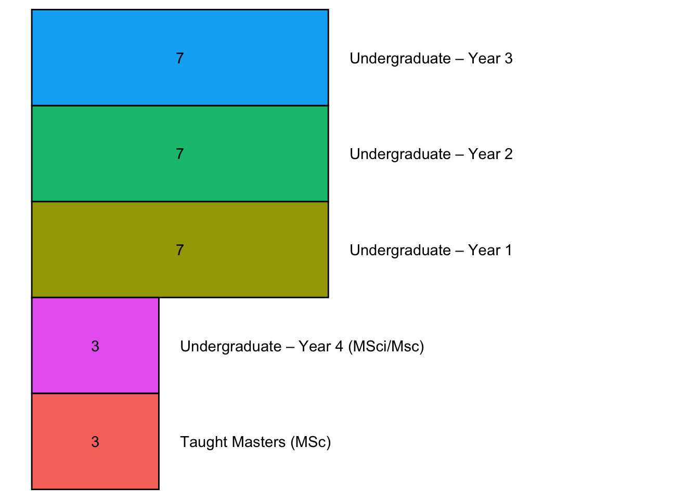
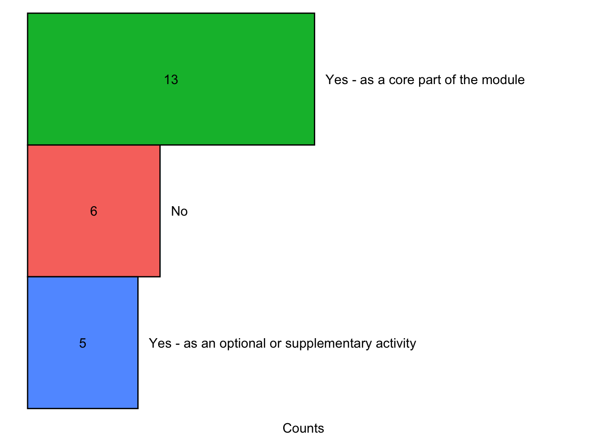
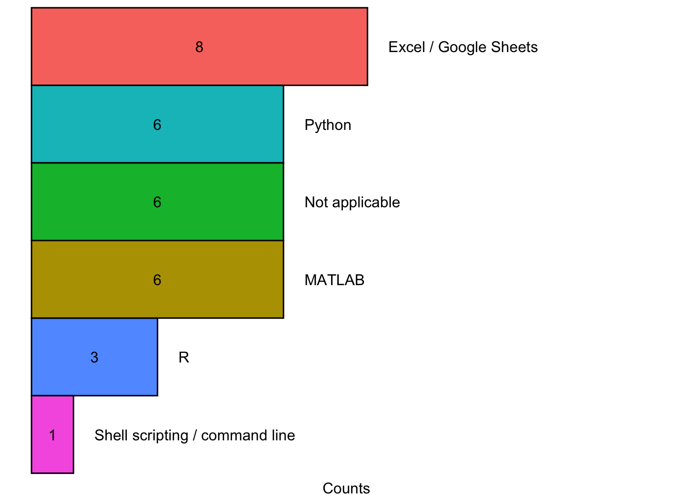
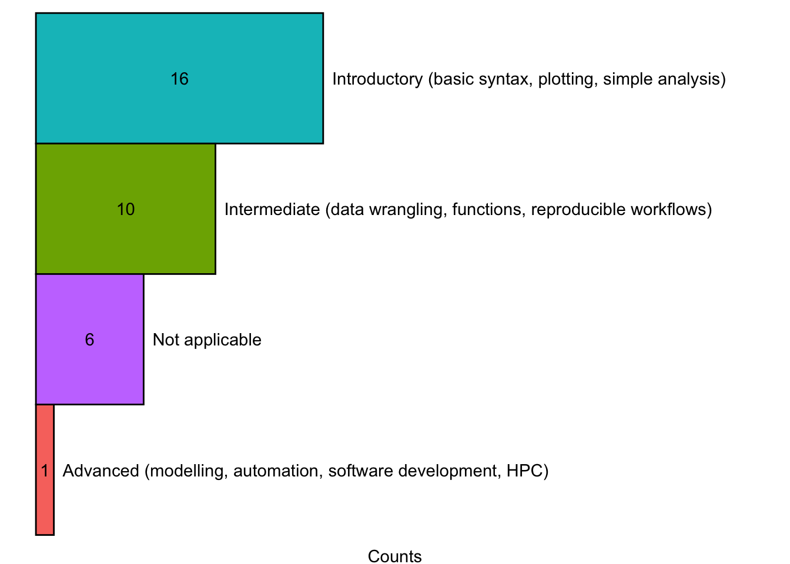
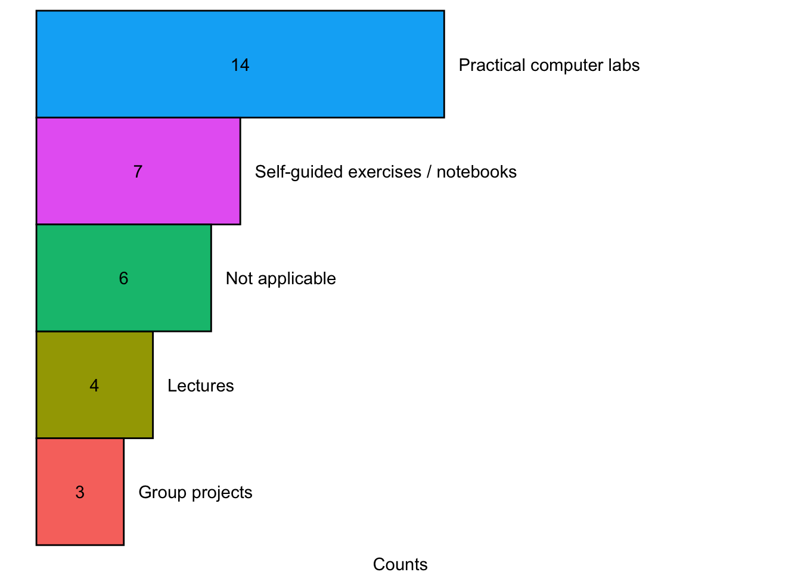
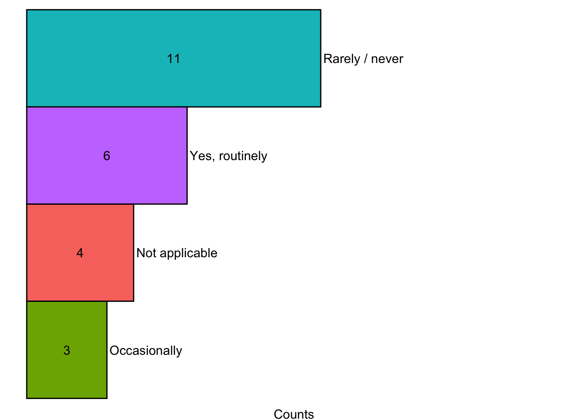

Show code chunk
# Load required libraries
library(dplyr)
library(tibble)
library(tidyr)
library(readr)
library(stringr)
library(forcats)
library(ggplot2)
# Load data
dat <- read_csv("data/survey_responses.csv")This report is a summary of the 2025 survey ‘Coding and Open Science Teaching in the Department of Earth Sciences’. The survey aimed to map current teaching practices around coding, computational methods, and open science across the Department of Earth Sciences at University College London. Survey findings are intended to guide a potential departmental-level strategy, and assess whether a dedicated ‘Research Skills’ module focused on coding and open science is needed.
Below, a report of the survey findings are given, organised around the survey questions. The report is generated in Quarto using R, with data processing and visualisaiton code chunks embedded for reproducibility purposes.
The source code and PDF version of the report can be downloaded here:
Download source | Download PDF
The raw and cleaned data from survey responses can be downloaded here:
Load required libraries and data.
# Load required libraries
library(dplyr)
library(tibble)
library(tidyr)
library(readr)
library(stringr)
library(forcats)
library(ggplot2)
# Load data
dat <- read_csv("data/survey_responses.csv")Clean and wrangle data.
# Some data cleaning and wrangling is required
dat <- dat %>%
# Drop unneccesary columns
select(-c(`Start time`, `Completion time`, `Last modified time`, Name, Email)) %>%
# Rename columns for handling
rename(Name = Name2,
Email = Email2) %>%
# Filter rows
# Duplicate response: Pieter answered initially with a combined response for modules
filter(ID != 2) %>%
# Split Stephen's responses (multiple modules per response)
bind_rows(., .[which(.$ID == 4), ]) %>%
# Split Ana's responses (multiple modules per response)
bind_rows(., .[which(.$ID == 21), ]) %>%
# Split Alex's responses (multiple modules per response)
bind_rows(., .[which(.$ID == 23), ]) %>%
# Split Paul's responses (multiple modules per response)
bind_rows(., .[which(.$ID == 24), ], .[which(.$ID == 24), ]) %>%
# Sort by name
arrange(Name) %>%
# Add unique ID
mutate(ID = 1:nrow(.)) %>%
# Filter rows
# Module reported twice
# GEOL0044: Palaeoceanography
filter(ID != 6) %>%
# GEOL0065: Research Methods and Skills
filter(ID != 3) %>%
# GEOL0018: Numerical Methods
filter(ID != 4) %>%
# Update unique ID
mutate(ID = 1:nrow(.)) %>%
# Mutate rows
mutate(Email = tolower(Email),
Name = str_to_title(Name),
`Module code and name (e.g. GEOL0017: Isotope Geology)` = case_when(
`Module code and name (e.g. GEOL0017: Isotope Geology)` == "GEOL0012 Global Geophysics" ~ "GEOL0012: Global Geophysics",
`Module code and name (e.g. GEOL0017: Isotope Geology)` == "GEOL0004" ~ "GEOL0004: Dynamic Earth",
`Module code and name (e.g. GEOL0017: Isotope Geology)` == "GEOL0045 Paleoclimate and Paleoenvironmental Change\n(note: taught at Y3, Y4, and MSc levels)" ~ "GEOL0045: Palaeoclimate and Palaeoenvironmental Change",
`Module code and name (e.g. GEOL0017: Isotope Geology)` == "GEOL0077" ~ "GEOL0077: Introduction to Mineral Resources",
`Module code and name (e.g. GEOL0017: Isotope Geology)` == "GEOL0008 (Geochemistry)" ~ "GEOL0008: Geochemistry",
`Module code and name (e.g. GEOL0017: Isotope Geology)` == "GEOL0069: AI4EO" ~ "GEOL0069: Artificial Intelligence for Earth Observations", TRUE ~ `Module code and name (e.g. GEOL0017: Isotope Geology)`
),
`Module code and name (e.g. GEOL0017: Isotope Geology)` = if_else(ID == 1, "GEOL0031: Environmental Geochemistry", `Module code and name (e.g. GEOL0017: Isotope Geology)`),
`Module code and name (e.g. GEOL0017: Isotope Geology)` = if_else(ID == 2, "GEOL0076: Environmental Geoscience", `Module code and name (e.g. GEOL0017: Isotope Geology)`),
`Module code and name (e.g. GEOL0017: Isotope Geology)` = if_else(ID == 3, "GEOL0030: Seismology II", `Module code and name (e.g. GEOL0017: Isotope Geology)`),
`Module code and name (e.g. GEOL0017: Isotope Geology)` = if_else(ID == 12, "GEOL0003: History of Life", `Module code and name (e.g. GEOL0017: Isotope Geology)`),
`Module code and name (e.g. GEOL0017: Isotope Geology)` = if_else(ID == 13, "GEOL0015: Maps, Images & Structures", `Module code and name (e.g. GEOL0017: Isotope Geology)`),
`Module code and name (e.g. GEOL0017: Isotope Geology)` = if_else(ID == 14, "GEOL0044: Palaeoceanography", `Module code and name (e.g. GEOL0017: Isotope Geology)`),
`Module code and name (e.g. GEOL0017: Isotope Geology)` = if_else(ID == 23, "GEOL0018: Numerical Methods", `Module code and name (e.g. GEOL0017: Isotope Geology)`),
`Module code and name (e.g. GEOL0017: Isotope Geology)` = if_else(ID == 24, "GEOL0020/79: Field Geophysics", `Module code and name (e.g. GEOL0017: Isotope Geology)`),
`Teaching level:` = if_else(ID == 1, "Undergraduate – Year 3", `Teaching level:`),
`Teaching level:` = if_else(ID == 2, "Undergraduate – Year 2", `Teaching level:`),
`Teaching level:` = if_else(ID == 3, "Undergraduate – Year 3", `Teaching level:`),
`Teaching level:` = if_else(ID == 12, "Undergraduate – Year 1", `Teaching level:`),
`Teaching level:` = if_else(ID == 13, "Undergraduate – Year 1", `Teaching level:`),
`Teaching level:` = if_else(ID == 14, "Undergraduate – Year 4 (MSci/MSc)", `Teaching level:`),
`Teaching level:` = if_else(ID == 23, "Undergraduate – Year 2", `Teaching level:`),
`Teaching level:` = if_else(`Teaching level:` == "Undergraduate – Year 1;", "Undergraduate – Year 1", `Teaching level:`),
`Teaching level:` = if_else(`Teaching level:` == "Undergraduate – Year 2;", "Undergraduate – Year 2", `Teaching level:`),
`Teaching level:` = if_else(`Teaching level:` == "Undergraduate – Year 3;", "Undergraduate – Year 3", `Teaching level:`),
`Teaching level:` = if_else(`Teaching level:` == "Taught Masters (MSc);", "Taught Masters (MSc)", `Teaching level:`),
`Which programming languages or tools are used? (select all that apply)` = case_when(
`Which programming languages or tools are used? (select all that apply)` == "Python;Excel / Google Sheets;QGIS;" ~ "Python, Excel / Google Sheets, QGIS",
`Which programming languages or tools are used? (select all that apply)` == "R;QGIS;" ~ "R, GIS",
`Which programming languages or tools are used? (select all that apply)` == "MATLAB;" ~ "MATLAB",
`Which programming languages or tools are used? (select all that apply)` == "Not applicable" ~ "Not applicable",
`Which programming languages or tools are used? (select all that apply)` == "Excel / Google Sheets;" ~ "Excel / Google Sheets",
`Which programming languages or tools are used? (select all that apply)` == "MATLAB;GPlates;" ~ "MATLAB, GPlates",
`Which programming languages or tools are used? (select all that apply)` == "Python;Shell scripting / command line;" ~ "Python, Shell scripting / command line",
`Which programming languages or tools are used? (select all that apply)` == "R;Excel / Google Sheets;" ~ "R, Excel / Google Sheets",
`Which programming languages or tools are used? (select all that apply)` == "R;" ~ "R",
`Which programming languages or tools are used? (select all that apply)` == "Python;" ~ "Python",
`Which programming languages or tools are used? (select all that apply)` == "MATLAB;Excel / Google Sheets;" ~ "MATLAB, Excel / Google Sheets"
),
`At what level are these coding skills taught?` = if_else(`At what level are these coding skills taught?` == "Not applicable;", "Not applicable", `At what level are these coding skills taught?`))
# Replace NA values
dat <- as_tibble(apply(dat, 2, function(x) { x[ is.na(x) ] <- "Not applicable"; x}))
write_csv(x = dat, file = "data/data.csv")Thanks to everyone’s responses, we have data for 24 modules from 17 different teaching staff. We are missing a few but I believe we have a fairly good representation of modules in the Department. The survey responses received cover the following modules:
# Print sorted unique list of modules
sort(unique(dat$`Module code and name (e.g. GEOL0017: Isotope Geology)`)) [1] "GEOL0001: Earth Materials"
[2] "GEOL0003: History of Life"
[3] "GEOL0004: Dynamic Earth"
[4] "GEOL0005: Foundations of Physical Geoscience"
[5] "GEOL0007: The Earth"
[6] "GEOL0008: Geochemistry"
[7] "GEOL0009: Vertebrate Palaeontology and Evolution"
[8] "GEOL0012: Global Geophysics"
[9] "GEOL0013: Principles of Climate"
[10] "GEOL0015: Maps, Images & Structures"
[11] "GEOL0017: Isotope Geology"
[12] "GEOL0018: Numerical Methods"
[13] "GEOL0020/79: Field Geophysics"
[14] "GEOL0030: Seismology II"
[15] "GEOL0031: Environmental Geochemistry"
[16] "GEOL0036: Advanced Biodiversity and Macroevolutionary Studies"
[17] "GEOL0044: Palaeoceanography"
[18] "GEOL0045: Palaeoclimate and Palaeoenvironmental Change"
[19] "GEOL0057: Geodynamics and Global Tectonics"
[20] "GEOL0061: Statistics for Geoscientists"
[21] "GEOL0065: Research Methods and Skills"
[22] "GEOL0069: Artificial Intelligence for Earth Observations"
[23] "GEOL0076: Environmental Geoscience"
[24] "GEOL0077: Introduction to Mineral Resources" Survey responses include modules from all teaching years. Note, several modules are available to students on different courses so the total exceeds 24.
# Define variable to visualise
var <- "Teaching level:"
# Summarise and visualise
dat %>%
select(.data[[var]]) %>%
summarise(`Undergraduate – Year 1` = str_count(string = ., pattern = "Year 1"),
`Undergraduate – Year 2` = str_count(string = ., pattern = "Year 2"),
`Undergraduate – Year 3` = str_count(string = ., pattern = "Year 3"),
`Undergraduate – Year 4 (MSci/Msc)` = str_count(string = ., pattern = "Year 4"),
`Taught Masters (MSc)` = str_count(string = ., pattern = "Taught Masters")) %>%
pivot_longer(cols = 1:5) %>%
ggplot(data = ., aes(x = value, y = fct_reorder(name, value), fill = name)) +
geom_col(width = 1, colour = "black") +
geom_text(aes(label = name, x = value + 0.5), hjust = 0, colour = "black") +
geom_text(aes(label = value), position = position_stack(vjust = 0.5), colour = "black") +
scale_x_continuous(limits = c(0, 15)) +
xlab("Counts") +
theme_void() +
theme(legend.position = "none")
Of the modules we have data for, coding or computational elements are currently a core component of ~54% of modules (13), and an optional or supplementary activity of ~21% of modules (5). The remaining 25% of modules (6) do not have any coding or computational element.
# Define variable for plotting
var <- "Do you include coding or computational elements in the module?"
# Summarise and visualise data
dat %>%
group_by(.data[[var]]) %>%
summarise(n = length(.data[[var]])) %>%
ggplot(data = ., aes(x = n, y = fct_reorder(.data[[var]], n), fill = .data[[var]])) +
geom_col(width = 1, colour = "black") +
geom_text(aes(label = .data[[var]], x = n + 0.5), hjust = 0, colour = "black") +
geom_text(aes(label = n), position = position_stack(vjust = 0.5), colour = "black") +
scale_x_continuous(limits = c(0, 25)) +
xlab("Counts") +
theme_void() +
theme(legend.position = "none",
axis.title.x = element_text())
Across modules, students are currently exposed to the following programming languages or tools: Excel / Google Sheets (~33% of modules), Python (~25% of modules), MATLAB (~25% of modules), R (~13% of modules), Shell scripting / command line (~4% of modules). In six modules (~25%), students are not currently exposed to any programming languages or computational tools. Note, the sum of percentages is greater than 100% as some modules contain multiple languages/tools.
var <- "Which programming languages or tools are used? (select all that apply)"
dat %>%
select(.data[[var]]) %>%
summarise(R = str_count(string = ., pattern = "R"),
MATLAB = str_count(string = ., pattern = "MATLAB"),
`Shell scripting / command line` = str_count(string = ., pattern = "Shell scripting / command line"),
`Excel / Google Sheets` = str_count(string = ., pattern = "Excel / Google Sheets"),
Python = str_count(string = ., pattern = "Python"),
`Not applicable` = str_count(string = ., pattern = "Not applicable")) %>%
pivot_longer(cols = 1:6) %>%
ggplot(data = ., aes(x = value, y = fct_reorder(name, value), fill = name)) +
geom_col(width = 1, colour = "black") +
geom_text(aes(label = name, x = value + 0.5), hjust = 0, colour = "black") +
geom_text(aes(label = value), position = position_stack(vjust = 0.5), colour = "black") +
scale_x_continuous(limits = c(0, 15)) +
xlab("Counts") +
theme_void() +
theme(legend.position = "none",
axis.title.x = element_text())
Across the 24 modules recorded, students are exposed to an introductory (~66% of modules), intermediate (~41% of modules), and advanced (~4%) level of coding skills. As above, in six modules (~25%), students are not currently exposed to coding. Note, the sum of percentages is greater than 100% as some modules contain multiple languages/tools.
var <- "At what level are these coding skills taught?"
dat %>%
select(.data[[var]]) %>%
summarise(`Introductory (basic syntax, plotting, simple analysis)` = str_count(
string = ., pattern = "Introductory"
),
`Intermediate (data wrangling, functions, reproducible workflows)` = str_count(
string = ., pattern = "Intermediate"
),
`Advanced (modelling, automation, software development, HPC)` = str_count(
string = ., pattern = "Advanced"
),
`Not applicable` = str_count(string = ., pattern = "Not applicable")
) %>%
pivot_longer(cols = 1:4) %>%
ggplot(data = ., aes(x = value, y = fct_reorder(name, value), fill = name)) +
geom_col(width = 1, colour = "black") +
geom_text(aes(label = name, x = value + 0.5), hjust = 0, colour = "black") +
geom_text(aes(label = value), position = position_stack(vjust = 0.5), colour = "black") +
scale_x_continuous(limits = c(0, 40)) +
xlab("Counts") +
theme_void() +
theme(legend.position = "none",
axis.title.x = element_text())
The contact hours dedicated to coding or computational training is variable across modules, with ~13% of modules (n = 3) exposing students to more than 10 dedicated hours of coding or computational training, while ~42% of modules have less than 2 hours or no exposure (n = 10).
var <- "How much time (in contact hours) is dedicated to coding or computational training within the module?"
dat %>%
group_by(.data[[var]]) %>%
summarise(n = length(.data[[var]])) %>%
ggplot(data = ., aes(x = n, y = fct_reorder(.data[[var]], n), fill = .data[[var]])) +
geom_col(width = 1, colour = "black") +
geom_text(aes(label = .data[[var]], x = n + 0.5), hjust = 0, colour = "black", ) +
geom_text(aes(label = n), position = position_stack(vjust = 0.5), colour = "black") +
scale_x_continuous(limits = c(0, 9)) +
xlab("Counts") +
theme_void() +
theme(legend.position = "none",
axis.title.x = element_text())
A range of approaches are used to deliver computation training with practical computer labs being the most common approach (~58% of modules). Perhaps unsurprisingly, lecture and group projects are the least common delivery approach for computational training.
var <- "How do you teach these skills? (select all that apply)"
dat %>%
select(.data[[var]]) %>%
summarise(`Practical computer labs` = str_count(
string = ., pattern = "computer labs|practical sessions"
),
`Self-guided exercises / notebooks` = str_count(
string = ., pattern = "notebooks"
),
`Lectures` = str_count(
string = ., pattern = "Lectures"
),
`Group projects` = str_count(
string = ., pattern = "Group projects"
),
`Not applicable` = str_count(string = ., pattern = "Not applicable")
) %>%
pivot_longer(cols = 1:5) %>%
ggplot(data = ., aes(x = value, y = fct_reorder(name, value), fill = name)) +
geom_col(width = 1, colour = "black") +
geom_text(aes(label = name, x = value + 0.5), hjust = 0, colour = "black") +
geom_text(aes(label = value), position = position_stack(vjust = 0.5), colour = "black") +
scale_x_continuous(limits = c(0, 25)) +
xlab("Counts") +
theme_void() +
theme(legend.position = "none",
axis.title.x = element_text())
Responses indicate that coding and computational skills are often not assessed directly within modules, but are instead used as supporting tools for completing coursework, particularly for generating figures, plots, and data analyses. In many cases, students are expected to use a computational tool of their choice to achieve specified outputs, without formal instruction or explicit marking of coding ability. Where coding is assessed, this typically occurs through submitted code files that are checked for functionality and commenting, in-person programming exercises, practical assessments, coursework assignments, or projects, sometimes contributing between 5–30% of the final mark. A few modules include exam-based coding tasks or assessed practicals, while others assess written reports that rely on code-generated outputs rather than the code itself. Several respondents noted plans to introduce or expand Python-based practicals, and some assessments are formative only. Overall, direct assessment of coding skills appears variable and, in many cases, limited or indirect.
Responses indicate that prior coding experience or knowledge is assummed (fully/partly) for ~63% of modules (n = 15), while for 25% of modules no former knowledge or experience is expected.
var <- "Do you assume that students taking your module already have prior coding experience or knowledge?"
dat %>%
group_by(.data[[var]]) %>%
summarise(n = length(.data[[var]])) %>%
filter(!is.na(.data[[var]])) %>%
ggplot(data = ., aes(x = n, y = fct_reorder(.data[[var]], n), fill = .data[[var]])) +
geom_col(width = 1, colour = "black") +
geom_text(aes(label = .data[[var]], x = n + 0.5), hjust = 0, colour = "black") +
geom_text(aes(label = n), position = position_stack(vjust = 0.5), colour = "black") +
scale_x_continuous(limits = c(0, 20)) +
xlab("Counts") +
theme_void() +
theme(legend.position = "none",
axis.title.x = element_text())
Most respondents assume that students have at least some prior coding experience, typically through a first-year MATLAB module, which is commonly referenced as foundational. Many expect familiarity with basic syntax, plotting, and simple data analysis tasks, particularly in MATLAB, and in some cases Python or R. Several also assume competence in Excel for graphing and basic calculations. However, assumptions vary depending on cohort: some lecturers explicitly check students’ skill levels at the start (e.g. via a short diagnostic assessment) or ask about prior experience and offer introductory support where needed. MSc and non-departmental students are recognised as having highly variable backgrounds, ranging from proficient programmers to those with little or no experience. Overall, while a baseline of introductory coding exposure is often assumed, there is acknowledgement that skill levels are mixed and sometimes require reinforcement.
Responses indicate that explicit teaching of open science practices is limited overall, with the largest number of respondents (12) indicating that such practices are not applicable to their module. Among those who do address open science, data visualisation is the most commonly taught topic (10 responses). Research transparency and ethics, and open data/data sharing are each covered by 6 respondents. Fewer modules explicitly discuss reproducible research workflows and open-source software development (4 each), while version control (e.g. Git/GitHub) and data management and FAIR principles are each mentioned by 3 respondents. Preprints and open-access publishing are the least frequently discussed topics (2 responses). Overall, engagement with open science practices appears uneven, with emphasis placed more on visualisation and general transparency than on technical practices such as version control or FAIR data management.
var <- "Do you explicitly teach or discuss any of the following open science practices in the module? (select all that apply)"
dat %>%
select(.data[[var]]) %>%
summarise(`Version control (e.g. Git, GitHub)` = str_count(
string = ., pattern = "Version control"
),
`Data management and FAIR principles` = str_count(
string = ., pattern = "Data management and FAIR principles"
),
`Reproducible research workflows` = str_count(
string = ., pattern = "Reproducible research workflows"
),
`Data visualisation` = str_count(
string = ., pattern = "Data visualisation"
),
`Open data / data sharing` = str_count(
string = ., pattern = "Open data / data sharing"
),
`Open-source software development` = str_count(
string = ., pattern = "Open-source software development"
),
`Preprints / open-access publishing` = str_count(
string = ., pattern = "Preprints / open-access publishing"
),
`Research transparency and ethics` = str_count(
string = ., pattern = "Research transparency and ethics"
),
`Not applicable` = str_count(string = ., pattern = "Not applicable")
) %>%
pivot_longer(cols = 1:9) %>%
ggplot(data = ., aes(x = value, y = fct_reorder(name, value), fill = name)) +
geom_col(width = 1, colour = "black") +
geom_text(aes(label = name, x = value + 0.1), hjust = 0, colour = "black") +
geom_text(aes(label = value), position = position_stack(vjust = 0.5), colour = "black") +
scale_x_continuous(limits = c(0, 20)) +
xlab("Counts") +
theme_void() +
theme(legend.position = "none",
axis.title.x = element_text())
Where open science practices are taught, they are generally embedded within practical work, coursework, and research-led teaching rather than delivered as standalone topics. Several modules integrate these themes through the use of open tools and platforms, such as requiring submission in RMarkdown, providing lecture notes and supporting R packages via CRAN and GitHub, and encouraging student interaction with repositories (e.g. issuing pull requests). In some cases, students analyse their own data linked to FAIR publications, use public datasets, or work with openly available Python and mapping tools, with discussion of data provenance, funding, and open publication practices. Open science principles are also reinforced through research-focused activities such as group presentations on published papers (including discussion of reproducibility and methods transparency), contribution statements in group reports (CREDIT), and dedicated introductory lectures within practical blocks. Overall, integration tends to occur through authentic research workflows, practical exercises, and assessment design, with emphasis on clean, reproducible coding practices and awareness of professional standards.
Responses suggest that the use or production of openly available code or datasets is not yet widespread. The largest group of respondents (11) indicated that students rarely or never engage with openly available code or data in their coursework or projects. Six reported that this occurs routinely within their modules, while three said it happens occasionally. Four respondents considered the question not applicable to their teaching. Overall, while a minority of modules regularly incorporate open code or datasets, most either do so infrequently or not at all, indicating uneven adoption across the curriculum.
var <- "In the module, do students produce or use openly available code or datasets as part of their coursework or projects?"
dat %>%
group_by(.data[[var]]) %>%
summarise(n = length(.data[[var]])) %>%
filter(!is.na(.data[[var]])) %>%
ggplot(data = ., aes(x = n, y = fct_reorder(.data[[var]], n), fill = .data[[var]])) +
geom_col(width = 1, colour = "black") +
geom_text(aes(label = .data[[var]], x = n + 0.1), hjust = 0, colour = "black") +
geom_text(aes(label = n), position = position_stack(vjust = 0.5), colour = "black") +
scale_x_continuous(limits = c(0, 20)) +
xlab("Counts") +
theme_void() +
theme(legend.position = "none",
axis.title.x = element_text())
The main barriers to teaching open science practices are perceived to be structural and capacity-related rather than technical. The most frequently cited challenge is lack of time within modules (14 responses), suggesting curriculum pressure as the primary constraint. This is followed by student readiness and variable background (9 responses), indicating concerns about differing skill levels. Lack of staff expertise is also a notable barrier (7 responses). Fewer respondents identified lack of departmental coordination or resources (3 responses), and none reported technical constraints (e.g. software or IT) as a barrier. Overall, time pressures and varying levels of staff and student preparedness are seen as the key obstacles to embedding open science practices more fully in teaching.
var <- "What do you think are the main barriers to teaching open science practices? (select all that apply)"
dat %>%
select(.data[[var]]) %>%
summarise(`Lack of time within modules` = str_count(
string = ., pattern = "Lack of time within modules"
),
`Student readiness / variable background` = str_count(
string = ., pattern = "Student readiness"
),
`Lack of staff expertise` = str_count(
string = ., pattern = "Lack of staff expertise"
),
`Lack of departmental coordination or resources` = str_count(
string = ., pattern = "Lack of departmental coordinates or resources"
),
`Technical constraints (software, IT)` = str_count(
string = ., pattern = "Technical constraints"
),
`Not applicable` = str_count(string = ., pattern = "Not applicable")
) %>%
pivot_longer(cols = 1:5) %>%
ggplot(data = ., aes(x = value, y = fct_reorder(name, value), fill = name)) +
geom_col(width = 1, colour = "black") +
geom_text(aes(label = name, x = value + 0.5), hjust = 0, colour = "black") +
geom_text(aes(label = value), position = position_stack(vjust = 0.5), colour = "black") +
scale_x_continuous(limits = c(0, 25)) +
xlab("Counts") +
theme_void() +
theme(legend.position = "none",
axis.title.x = element_text())
Responses suggest that coding and open science skills are highly valued for Earth Science graduates, with many respondents (13) considering that they are essential and others that they are of high importance (9). No respondent consider these skills to be of little importance.
var <- "How important do you think coding and open science skills are for Earth Science graduates? (1 = not important, 5 = essential)"
dat %>%
select(.data[[var]]) %>%
summarise(`Score 1 (not important)` = str_count(
string = ., pattern = "1"
),
`Score 2` = str_count(
string = ., pattern = "2"
),
`Score 3` = str_count(
string = ., pattern = "3"
),
`Score 4` = str_count(
string = ., pattern = "4"
),
`Score 5 (essential)` = str_count(
string = ., pattern = "5"
)
) %>%
pivot_longer(cols = 1:5) %>%
ggplot(data = ., aes(x = value, y = fct_reorder(name, value), fill = name)) +
geom_col(width = 1, colour = "black") +
geom_text(aes(label = name, x = value + 0.5), hjust = 0, colour = "black") +
geom_text(aes(label = value), position = position_stack(vjust = 0.5), colour = "black") +
scale_x_continuous(limits = c(0, 25)) +
xlab("Counts") +
theme_void() +
theme(legend.position = "none",
axis.title.x = element_text())
While coding and open science skills are considered to be of high value, respondents are largely unsure (15) about whether there should be a dedicated departmental module on training these skills. Several respondents (7) demonstrated support for a dedicated module while some (2) have reservations about the need for such a module.
var <- "Do you think there is a need for a dedicated departmental module on coding and open science skills?"
dat %>%
select(.data[[var]]) %>%
summarise(`Yes` = str_count(
string = ., pattern = "Yes"
),
`Maybe / not sure` = str_count(
string = ., pattern = "Maybe / not sure"
),
`No` = str_count(
string = ., pattern = "No"
)
) %>%
pivot_longer(cols = 1:3) %>%
ggplot(data = ., aes(x = value, y = fct_reorder(name, value), fill = name)) +
geom_col(width = 1, colour = "black") +
geom_text(aes(label = name, x = value + 0.5), hjust = 0, colour = "black") +
geom_text(aes(label = value), position = position_stack(vjust = 0.5), colour = "black") +
scale_x_continuous(limits = c(0, 25)) +
xlab("Counts") +
theme_void() +
theme(legend.position = "none",
axis.title.x = element_text())
Responses suggest broad support for strengthening coding provision, though there is less consensus on whether this should take the form of a standalone departmental module or better integration across the curriculum. Many respondents favour a dedicated, compulsory module early in undergraduate programmes to ensure all students gain basic programming skills (e.g. loops, data visualisation, version control, Linux/Git) and consistent foundations, particularly given variable backgrounds and low engagement with unassessed provision. Others argue that coding and open science principles may be more effective if embedded within existing subject-specific modules, provided there is improved coordination and sufficient staff expertise. Several emphasise the importance of employability, AI literacy, good coding practice, and Earth Sciences–relevant examples, while some view open science skills as more essential for postgraduate or research-focused students than undergraduates. Overall, there is clear recognition of the importance of coding skills for all students, but mixed views on whether a new standalone module or structured integration across programmes would be the best approach.
Responses highlight a need for greater coordination, staff development, and structural support to embed more coding and open science training. Several respondents emphasise the value of a coherent, department-wide approach—such as a coordinated shift toward Python, clearer expectations of student skill levels, and a “golden thread” of coding across modules—to ensure consistency. Others noted the need for additional teaching time, dedicated practical slots, or support from colleagues with relevant expertise. Staff confidence and training were recurring themes, with some indicating they would require time to develop their own coding skills before integrating it into teaching. Suggested practical resources include editable slide decks, a departmental GitHub account, and a dedicated open science resources webpage. A few respondents raised the need for guidance on AI-related issues. Overall, the main supports identified were improved coordination, shared resources, staff upskilling, and sufficient curriculum time.
Text